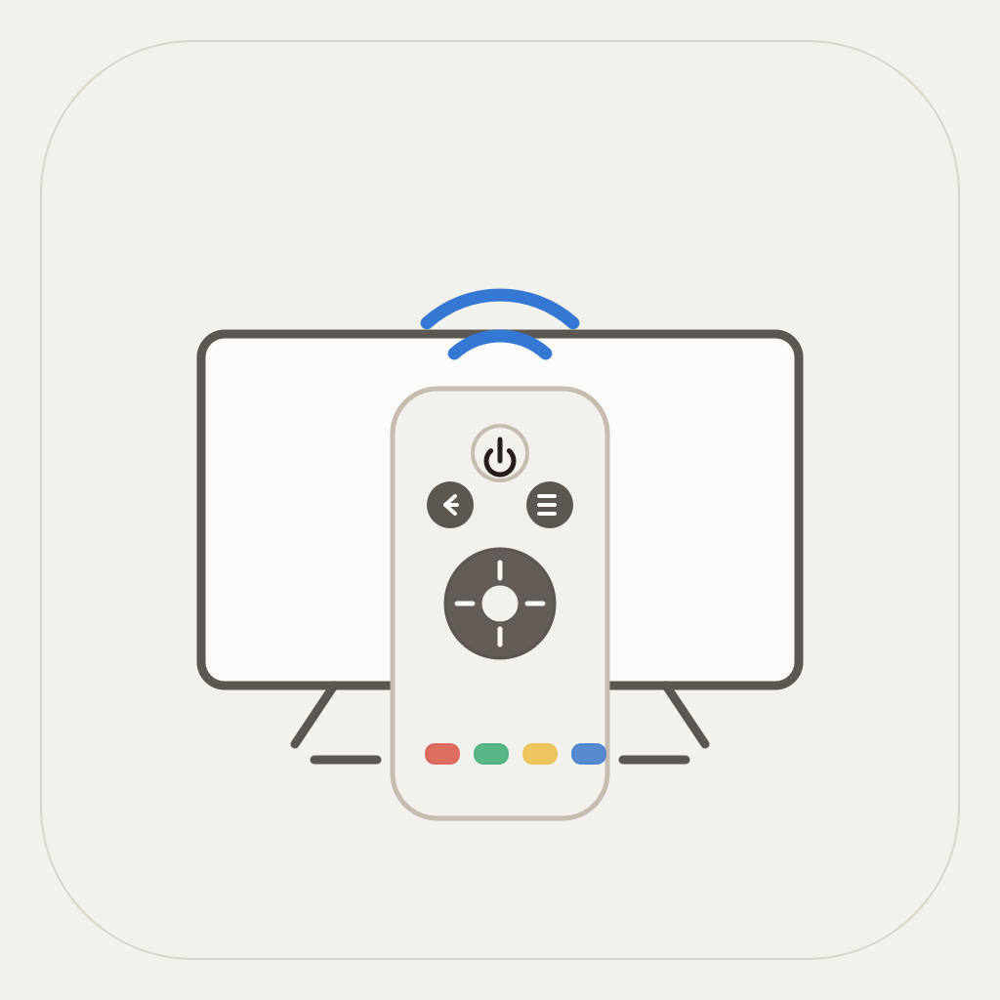

Quick TV Discovery
Find compatible Samsung TVs on your local network and pair through the TV approval prompt when required.

iPhone Utility App
A simple iPhone remote for compatible Samsung Smart TVs.
iOS TV Remote helps you discover, pair with, reconnect to, and control one compatible Samsung TV from your iPhone on the same Wi-Fi network. It is an independent app and is not affiliated with Samsung.
Find compatible Samsung TVs on your local network and pair through the TV approval prompt when required.
Keep the MVP focused with a single saved TV and automatic reconnect on future launches.
Use navigation, OK, Back, Home, Play/Pause, volume, channel, number, and color key controls.
No accounts, ads, analytics, subscriptions, or cloud sync. Connection details stay on your device.